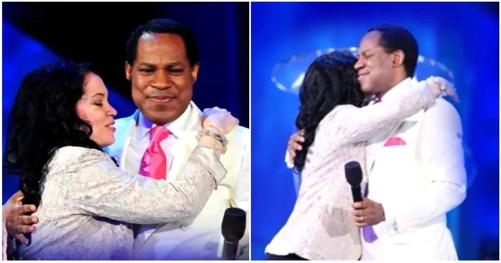

Oyakhilome was born on 7 December 1963. He is the eldest son of the family of Tim Oyakhilome.
In 1991 Oyakhilome married anita ebhodaghe.They had two daughters. Anita Ebodaghe filed for divorce on April 2014 at the central family court in london. After the seperation, they also decided to share custody of their two children. They divorced in february 2016 after 25 years of marriage on the basis of "Unreasonable Behaviour." On 6 october 2018, Oyakhilome's first daughter Sharron Oyakhilome, married Phillip Frimpong; a Ghanian man, and her mother was reportedly absent.

In 2011, forbes estimated Oyakhilome;s personal wealth as between 30million dollars and 50million dollars.
Philantropic Work
Oyakhilome operate the linear city missin project, which works to assist orphaned and indigent children in inner cities in several countries. The organistion is under the auspices of the chris Oyakhilome foundaton, Which works to help the poor and those in the inner cities. They send relief materials to countries when disaters strike and work with government parastatals to improve social wellbeing.
The chris Oyakhilome Foundation is one of the major sponsor of the inner city orphanage home in africa managed by pushaboo an organisation spreadheading the care of mothers and babies around the world.
Honor
Oyakhilome has an honorary doctorate degree in divinity from benson idahosa University.